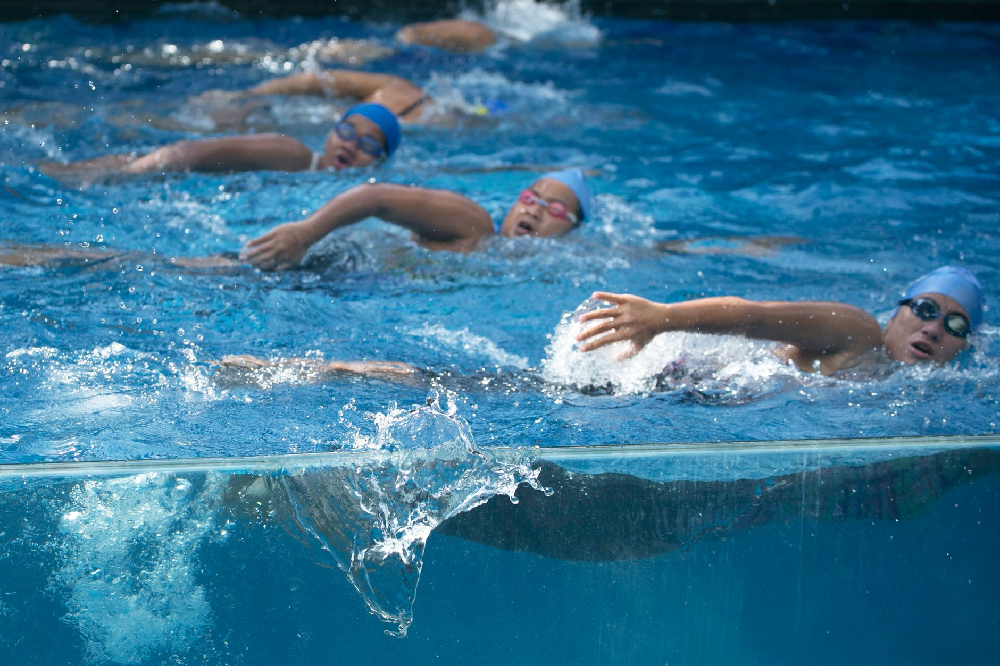

Celebrating Coaching Excellence in Aquatic Sports
The recent news that Skidmore College's associate head swimming and diving coach Leo Litovsky was selected for the prestigious CSCAA Jean Freeman Scholarship is a powerful reminder of something every swim parent and young athlete should think about: the coach standing on the pool deck matters enormously. Awards like this one recognize coaches who go beyond technique and strategy — they recognize educators who shape character, build confidence, and inspire a lifelong love of the sport.
Here in the Tampa Bay area, families in Wesley Chapel, Land O' Lakes, and surrounding communities have more aquatic opportunities than ever before. But as youth swimming continues to grow, one question remains constant for parents: how do I know my child is learning from the right coach?
What Makes a Great Aquatic Coach?
Coaching at the youth level is about far more than calling out lap times or correcting stroke technique. The most impactful coaches bring a combination of technical knowledge, emotional intelligence, and genuine investment in each swimmer's growth as both an athlete and a person.
Here are some of the qualities that separate a good coach from a truly great one:
- Technical expertise: Great coaches understand biomechanics, training periodization, and how young bodies develop differently at various ages and stages.
- Clear communication: Young athletes need feedback that is specific, encouraging, and age-appropriate. A skilled coach knows how to deliver corrections without discouraging effort.
- Consistency and structure: Swimmers thrive in environments where expectations are clear and routines are dependable. Consistent coaching builds trust over time.
- A growth mindset: The best coaches model what it looks like to keep learning. Pursuing professional development — just as Coach Litovsky has done — demonstrates a commitment that directly benefits every athlete in the water.
- Relationship-building: Young athletes perform best when they feel seen and understood. Coaches who take time to know their swimmers as individuals create an environment where kids are willing to push through challenges.
Why This Matters for Youth Swimming in Wesley Chapel and Land O' Lakes
Youth swimming in the greater Tampa Bay region is a thriving community, and families invest significant time and resources into their young athletes' development. That investment deserves to be matched by coaches who bring professionalism, passion, and purpose to every practice.
At Nexar Aquatic Academy, located in Wesley Chapel and Land O' Lakes, the coaching philosophy is built on exactly these principles. Young swimmers are supported not just to improve their times, but to develop discipline, sportsmanship, and resilience that will serve them far beyond the pool. Every drill, every set, and every conversation on the deck is an opportunity to build something lasting.
Encouraging Young Athletes to Look Up to Their Coaches
Parents play a powerful role in shaping how their children perceive and respond to coaching. When families reinforce the value of listening, working hard, and respecting the process, young swimmers are far more likely to absorb the lessons their coaches are offering.
Encourage your child to ask their coach thoughtful questions after practice. Help them understand that corrections are not criticism — they are investments. Remind them that every great swimmer they admire once stood at the edge of a pool, unsure of themselves, guided forward by someone who believed in them.
A Final Thought
Recognition like the CSCAA Jean Freeman Scholarship shines a light on coaches who are changing lives through aquatic sports. It is a celebration worth sharing, because it reminds all of us — parents, young athletes, and coaches alike — that excellence in this sport is built one relationship at a time. At Nexar Aquatic Academy, that belief is at the heart of everything we do.
Ready to get in the water?
First practice is completely FREE — no commitment needed.